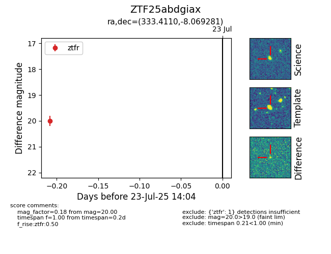

Target ZTF25abdgiax at 2025-07-23 14:04, see:
FINK: fink-portal.org/ZTF25abdgiax
Lasair: lasair-ztf.lsst.ac.uk/objects/ZTF25abdgiax
ALeRCE: alerce.online/object/ZTF25abdgiax
alt names
ZTF25abdgiax (ztf,fink)
coordinates:
equatorial (ra, dec) = (333.4110,-8.06928)
galactic (l, b) = (52.5064,-48.11166)
photometry
last ztfr=20.00
1 ztfr detections
